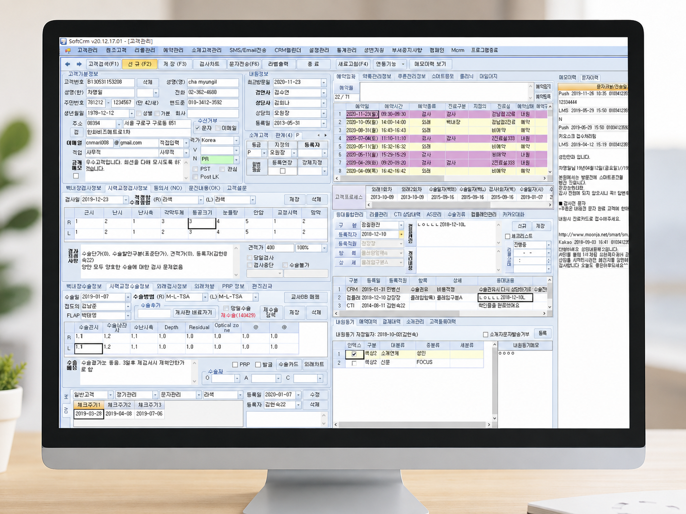
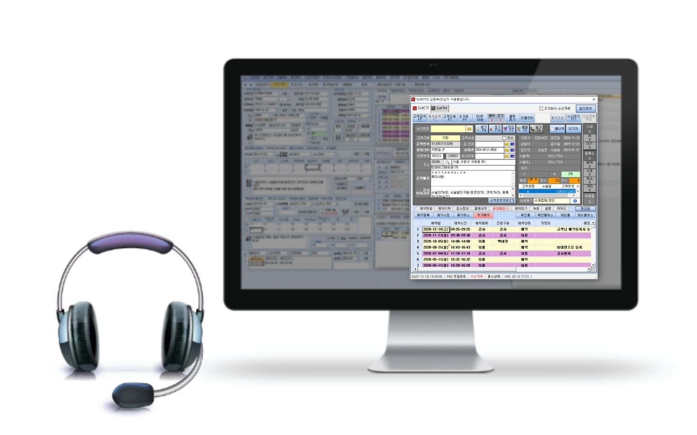
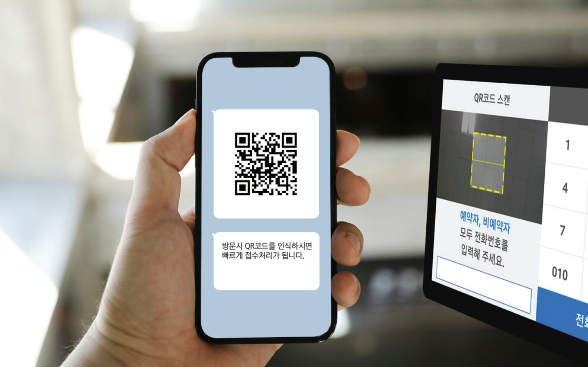
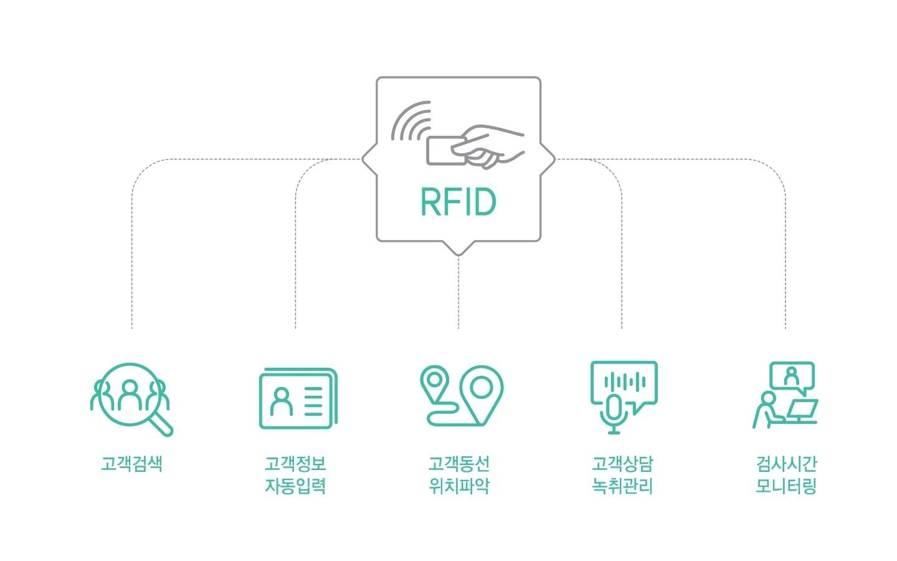
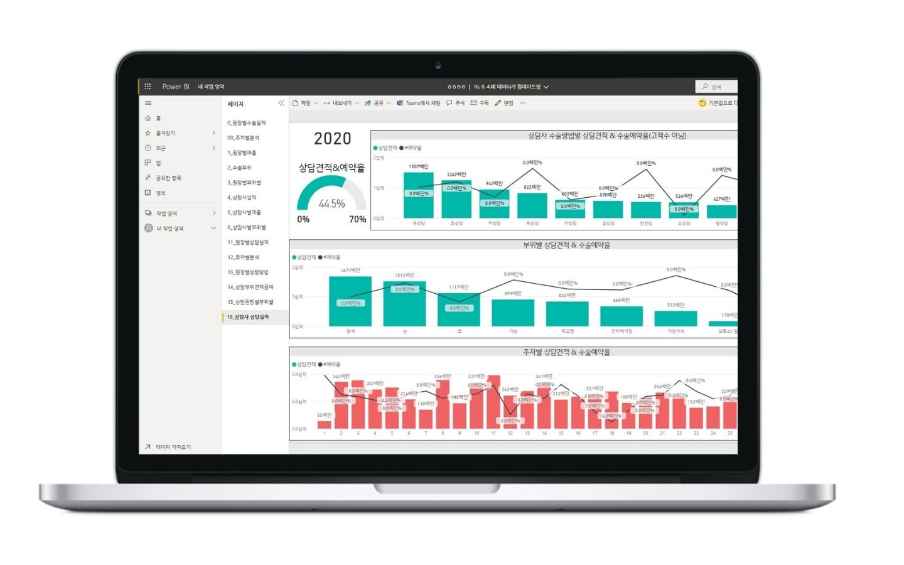
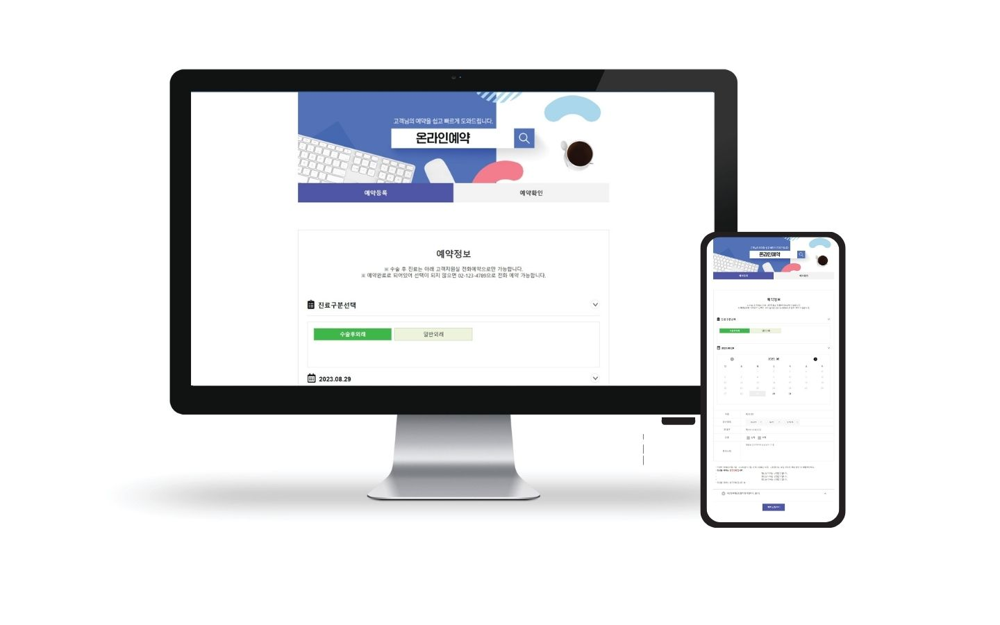
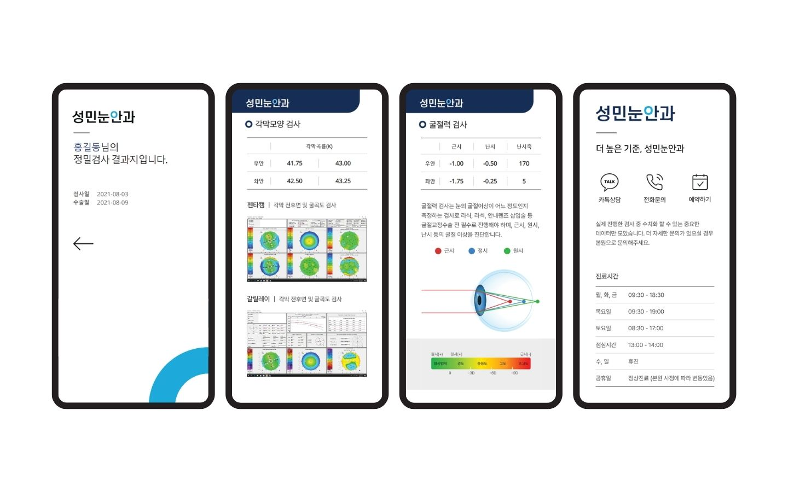
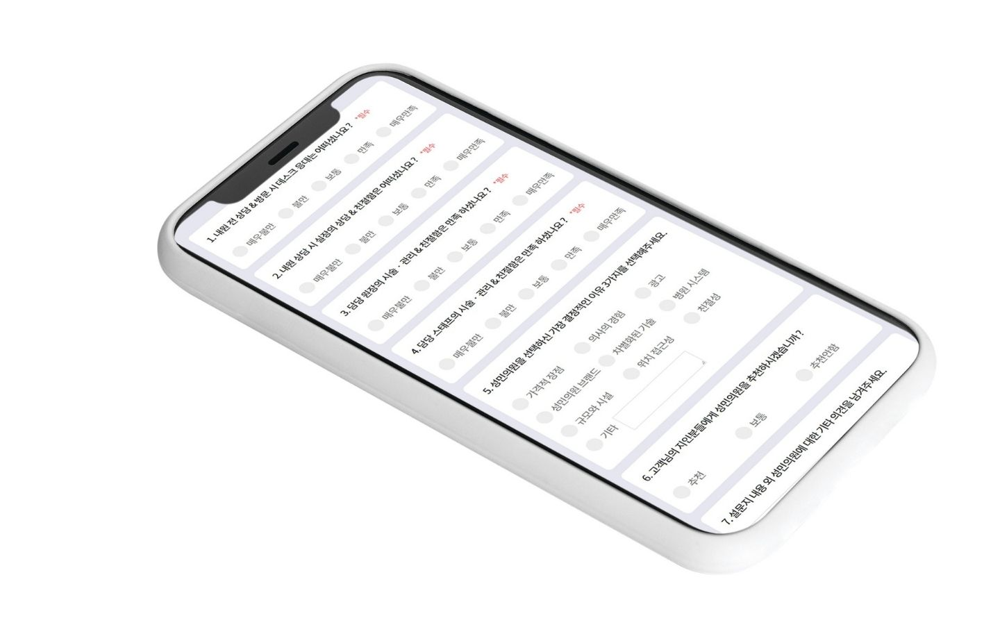
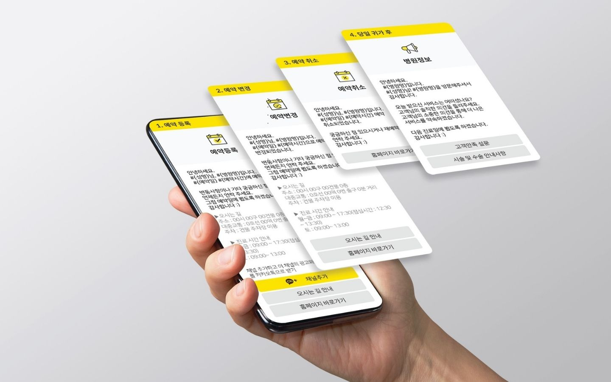

병원 업무를 잇는 10개 서비스
상담부터 접수, 분석, 데이터 보관까지 각 구간을 담당하는 서비스를 필요한 만큼 선택해 사용합니다.
SoftCRM
고객유입이 증가하는 최적화된 고객관리 프로세스를 구현합니다. 마케팅 데이터 유입부터 예약, 상담, 시술, 재구매까지 최적화된 CRM 서비스입니다.
- 고객관리창 한 화면에서 모든 정보를 즉시 확인하고 응대
- 검사, 수술, 외래 등 다양한 진료예약 통합 서비스 제공
- 리콜관리를 통한 예약취소, 부도고객 집중 관리 서비스

Soft CTI
CTI를 이용해 LG, KT 센트릭스 인터넷 전화기와 연동, 고객이 전화를 걸 때마다 실시간으로 고객 정보를 확인하세요. CRM 정보를 바탕으로 예약 프로세스를 바로 진행할 수 있습니다.
- 전화 수신 시 고객 자동검색 및 응대정보 저장
- 센트릭스 기반 당겨받기, 돌려주기 콜센터 기능 구현
- LG DCS장비 사용시 녹취기능 및 고도화된 콜센터 운영관리

Soft Kiosk
카카오 알림톡으로 예약 정보를 전달하고 QR코드로 내원 확인과 신규 고객 등록을 처리합니다. 고객 대기가 줄고 접수 정보는 바로 프런트 프로세스로 넘어갑니다.
- 문자, 카카오 알림톡에 발송된 QR코드로 즉시 내원확인 접수
- 예약자, 비예약자, 신규고객 실시간 모두 내원처리
- 안드로이드 태블릿을 활용한 비대면 내원 자동화 서비스

RF자동화 서비스
검사 장비 고객정보 입력과 EMR·CRM 고객검색을 RF카드로 1초 만에 처리합니다. 수작업을 줄이고 고객 동선을 시각화합니다.
- 검사장비 고객정보 입력(영문이름, 생년월일, 차트번호) 자동화
- 수술실 프로세스, 고객 동선 프로세스 시각화
- 검사 장비별 시간통계 분석으로 검사시간 최적화

PowerBI
예약, 검사, 수술, 외래, 수납 데이터를 한 곳에서 통합 분석합니다. 복잡한 데이터를 대시보드로 바꿔 의사결정에 필요한 지표만 봅니다.
- 통합 데이터 분석: 예약·검사·수술·외래·수납 데이터 통합 분석
- 시각적 대시보드로 직원 역량분석, 예약상태, 환자 통계 파악
- 모바일과 웹에서도 실시간으로 운영현황 확인

홈페이지 온라인 예약
병원별 맞춤 설정이 가능한 진료 예약 서비스입니다. 휴대폰 인증으로 고객을 확인하고, 예약 내용은 실시간으로 CRM 예약 페이지에 연동됩니다.
- 병원별 진료시간, 지정의, 진료실 설정 가능
- 예약 등록·수정 후 확인문자(카카오 알림톡) 발송
- 실시간 CRM 예약페이지 연동으로 예약 수작업 업무 감소

홈페이지 마이차트
굴절력, 각막두께, 동공크기, 안압 등 정밀검사 결과를 고객이 직접 확인합니다. 검사 내용 설명과 병원 안내 자료를 함께 담습니다.
- 검사 항목별 결과와 설명 이미지 상세 안내
- 병원 의료장비·수술방법·진료일정 카탈로그 안내
- 카톡상담, 전화문의, 예약하기 실시간 연동

사전문진 설문지 서비스
내원 전 고객 스마트폰으로 문진 정보를 입력받습니다. 고객 정보 입력 업무가 단순해지고 대기 시간이 줄어듭니다.
- 사전문진: 내원 전 고객정보·진료정보 수집
- 설문기능: 수술·외래 후 만족도 조사 및 직원 평가
- 모바일 쿠폰: 설문 참여 고객에게 쿠폰 발급

카카오 마케팅
카카오 알림톡으로 채널친구가 증가하고, 친구를 대상으로 셀프 광고마케팅을 지원합니다. 온라인 예약 챗봇과 상담으로 디지털 비즈니스를 완성합니다.
- 알림톡: 예약등록·수정·취소·병원안내 등 정보성 메시지 발송
- 친구톡·상담톡: 타겟팅 광고 메시지와 채팅상담 서비스
- 챗봇: 24시간 365일 CRM과 연동된 예약서비스 (AI 옴니채널 서비스 연동)

랜섬웨어 방지 클라우드 백업서비스
네이버 의료존에 매일 암호화하여 자동 백업하고, 랜섬웨어 감염 시에도 30분 내에 복원합니다. 평균 1,500~3,000만원의 랜섬웨어 피해를 무상으로 예방합니다.
- 네이버 의료존 클라우드 스토리지에 암호화 백업
- 랜섬웨어 발생 시 30분 이내 복원 서비스 제공
- 백업데이터는 최근 1주일 데이터까지 보관
어떤 조합이 맞는지 30분 시연으로 확인하세요
진료과와 상담 인원, 현재 쓰는 프로그램을 알려주시면 해당 구성으로 시연합니다.